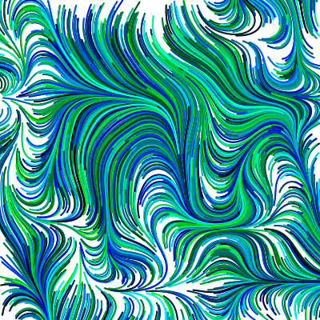

In this assignment we were asked to use the noise function to create two pictures. From where we left off in class I added a random color function and simulated a drawing that resembles feathers.

The second drawing is where the feather drawing came from.